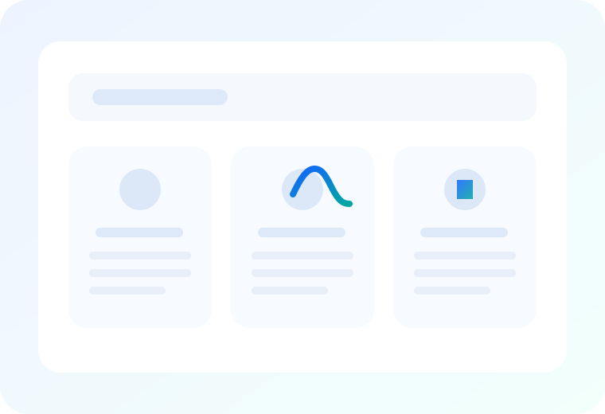

General consultations
Appointments for common health concerns, referrals, repeat prescriptions, certificates, and treatment advice.
- New and existing patients welcome
- Suitable for a wide range of everyday concerns
- Referral and follow-up coordination
Services & care pathways
From routine appointments to long-term care planning, HarborCare brings essential services together in one clear, easy-to-navigate place.

Service finder
Use the filters below to narrow services by preventive care, primary care, ongoing support, or digital appointments.
Appointments for common health concerns, referrals, repeat prescriptions, certificates, and treatment advice.
Routine health reviews focused on early intervention, screening, lifestyle guidance, and long-term wellbeing.
Regular review appointments for ongoing conditions with care planning, medication checks, and progress follow-up.
Virtual appointments for suitable concerns when a phone or video consultation is more convenient than visiting in person.
Supportive, continuity-based care including screening discussions, wellbeing concerns, and routine reviews.
Review your treatment plan, ask questions about medicines, and discuss side effects or ongoing management needs.
How care usually works
Healthcare feels easier when each step is clear. This pathway helps patients understand what usually happens before, during, and after an appointment.
Browse service categories, compare options, and decide whether you need a general consultation, review, or telehealth appointment.
Share your details, preferred service, and a short message so the clinic can guide your next step.
Visit the clinic or connect virtually for advice, assessment, treatment planning, or ongoing care review.
Return for reviews, repeat care, medication discussions, or ongoing condition management as needed.
What to expect
Service summaries are short, direct, and written in plain language to help people decide faster.
Actions, labels, and layout stay consistent across pages so patients know where to go next.
Mobile-friendly pages and quick contact options make it easier to reach the clinic on any device.